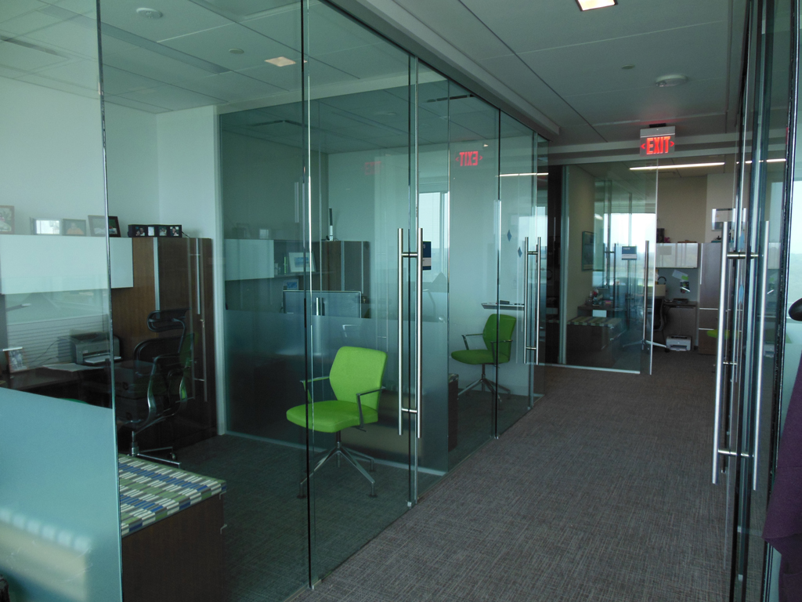

Semakin berkembangnya kemajuan zaman, mewujudkan banyak bahan atau material komplementer yang dapat mempercantik hunian atau tempat usaha anda. Banyak material pendukung yang dapat digunakan seperti kaca, parket lantai kayu dan masih banyak lagi. Tidak hanya memperindah, tetapi material pelangkap hal yang demikian dapat memberi garansi keamanan pada penghuni di dalamnya. Namun sekarang, penerapan kaca semakin meluas.
Tak hanya kaca, sekarang juga telah hadir material pendukung bagi bangunan yang sedang banyak di bangun ialah material parket lantai kayu jati. Tak cuma material kaca sekarang juga terdapat material kayu atau parket lantai kayu jati. Berikut ini sedikit review mengenai kaca bagi sebuah banguanan, fungsi utama dan bagaiman memilih kaca yang sesuai untuk sebuah hunian baik rumah, kantor maupun gedung. Akan di jelaskan juga mengenai lantai kayu jati terbaik yang bisa anda beli.
Distributor, Supplier & Jasa Pasang Kanopi Kaca Tegal
Seiring dengan perkembangan zaman di dunia properti, kini kanopi kaca Tegal sudah berkembang cepat mengikuti arsitektur modern. Jadi telah tak heran lagi seluruh orang mau mencari harga yang sungguh-sungguh kompetitif untuk menyesuaikan budget atau anggaran mereka masing – masing untuk membikin produk canopy kaca. Ada sebagian alasan mengapa Pintu Kaca Shower banyak dipakai salah satunya adalah kaca lebih terlihat bersih dan rapi dan juga lebih gampang dalam perawatannya. Kalau tembus pandang, kaca mengabsorpsi cahaya yang masuk sehingga kian tebal kaca karenanya kian sedikit cahaya yang dapat melaluinya, karenanya sifat transparannya makin berkurang.|Di samping pintu kaca shower akan membuat kamar mandi kecil nampak lebih besar. Atap akrilik atau bisa juga disebut atap kaca acrylic ini banyak ditemukan di sebuah bangunan rumah, seperti ruko, apartemen, cafe, mall, hingga bangunan gedung.
Tak anda dikala ini sedang memerlukan kanopi kaca Tegal, anda bisa segera mengunjungi dis.or.id. Terdapat banyak kanopi dengan beraneka ukuran dan ketebalan yang dapat anda pilih cocok dengan yang anda butuhkan. Anda juga dapat memenfaatkan jasa pemasangan atap kanopi kaca Tegal dengan segala macam kaca yang anda butuhkan yang layak dengan kriteria atap kanopi. Sesudah kaca untuk atap kanopi cukup digemari. Disana anda akan memperoleh kanopi kaca Tegal yang sesuai dengan bermacam ketebalan dan harga yang cukup relatif murah.
Info Lengkap Pemesanan
Google Maps: https://www.google.com/maps/d/u/0/viewer?mid=12-N5cMmHbEOEG6n-94L4JatnBnNRTFkr&ll=-7.27380280025364%2C112.65243155000007&z=18
Note: https://www.facebook.com/notes/distributor-of-industrial-supply/kontraktor-jasa-pasang-kanopi-kaca/1785710151728864/
Event: https://www.facebook.com/events/227495344457982/
Portfolio Produk: https://www.facebook.com/1681607345472479/photos/?tab=album&album_id=1712629809036899
Distributor & Supplier Kaca Shower

Kaca shower adalah kotak atau alat yang berfungsi sebagai penyekat ruang khusus untuk kamar mandi. Penyekat ini akan memisahkan antara tempat berair yang diterapkan untuk mandi atau meletakan shower dan tempat lain yang yakni area kering. Penyekat ini akan memisahkan antara daerah berair yang diaplikasikan untuk mandi atau meletakan shower dan daerah lain yang yaitu zona kering.
Disana anda bisa memperoleh kaca shower yang berkualitas dan harga yang juga relatif murah. Harga yang ditawarkan bahkan tergolong benar-benar murah.
Distributor, Supplier & Jasa Pasang Kanopi Kaca
Salah satu ragam kanopi kaca Tegal yang bisa anda aplikasikan pada atap adalah atap kaca skylight yang yaitu kanopi kaca Tegal dalam bentuk jendela horizontal atau kubah yang lazimnya ditempatkan di atap bangunan yang memiliki maksud untuk pencahayaan ruangan. Diantaraya yakni kaca tempered 8 mm, kaca tempered 10 mm clear, kaca tempered 12 mm clear, kaca laminated 12 mm clear, kaca laminated 5 mm + 5 mm clear non tempered kaca, kaca laminated 5 mm + 5 mm tempered clear dan masih banyak lagi. Canopy kaca dengan atap kaca memang sebuah bangunan yang asangat elgan untuk jaman modern seperti sekarang ini dengan harga yang benar-benar lumayan jika di bandingkan kanopi atap biasa. Harga atap kaca per meter persegi juga amat dipengaruhi oleh struktur pensupport yang di gunakan. Ada banyak alternatif varian desain. Jikalau tembus pandang, kaca menyerap sinar yang masuk sehingga semakin tebal kaca maka kian sedikit sinar yang dapat melewatinya, maka sifat transparannya makin berkurang.|Di samping pintu kaca shower akan membikin kamar mandi kecil kelihatan lebih besar. Pada atap akrilik, absorpsi cahaya yang terjadi demikian kecil sehingga walaupun ketebalannya bertambah, sifat transparannya tidak banyak berubah.
Tak anda tertarik untuk memasang kaca kanopi pada rumah, gedung ataupun kantor, anda bisa lantas mengunjungi dis.or.id. Selain disana anda bisa mendapatkan penawaran mengenai jasa pemasanga kanopi kaca Tegal. Sekiranya itu, kanopi juga bisa melindungi mobil dan kendaraan lain anda. Sesudah kaca untuk atap kanopi cukup digemari. Tidak anda sedang mencari kanopi kaca Tegal, anda dapat lantas mengunjungi dis.or.id.
Jasa Maintenance Kaca

Jasa maintenance kaca menawarkan pelayanan perawatan bahan bangunan yang terbuat dari kaca. Biasanya ditahui banyak pemilik gedung kaca yang berharap merawat bangunan. Tak kaca tak kusam, karenanya kaca sepatutnya dibersihkan secara regular. Jika itu, cakap membersihkan bangunan kaca melengkung.
Dis.or.id menyiapkan segala variasi kaca pantas kebutuhan saat ini.
Dis.or.id merupakan perusahaan jasa di bidang maintenance kaca gedung dengan memberikan sebagian pelayanan. Salah satunya pelayanan berupa pembersihan kaca dengan mengaplikasikan alat pembersih yang dapat membuat kaca gedung Anda kelihatan bersih seperti sediakala. Tersedia alat penunjang agar seluruh sisi gedung yang terbuat dari kaca bisa dipastikan segala sisi gedung dapat di bersihkan. Dis.or.id memiliki seluruh energi spesialis yang di rekrut cuma mereka yang profesional yang tahu persis bagaimana metode menerapkan alat dan bagaimana membersihkan kaca gedung bertingkat. Oleh karena itu, dis.or.id cuma memilih orang-orang yang sangat profesional dan telah memiliki pengalaman dalam hal maintenance kaca. Dengan telah memberikan training kepada kekuatan ahli sehingga mereka sudah dapat mengerjakan pekerjaan mereka dengan sangat bagus.
Jasa Pemasangan Kaca Tempered
Kaca Tempered merupakan salah satu ragam kaca dari sekian banyak tipe kaca yang tak jarang dipakai untuk jendela, pintu, dan partisi. Kian banyak orang yang berkeinginan menggunakan kaca ini. Sementara itu, untuk rumah hunian, komponen dari rumah seperti kamar mandi serta kanopi biasanya terbuat dari kaca tempered. Banyak komponen properti yang dapat dibuat dengan bahan berupa kaca tempered. Untuk gedung perkantoran, komponen yang paling acap kali diwujudkan dengan bahan yang satu ini yakni jendela dan pintu.
Banyak hal yang dapat dilakukakn kaca tempered ini salah satunya sebagai pembatas, untuk kamar mandi dan masih banyak lagi. Kecuali daya ahli yang dimiliki oleh dis yakni yang professional dan berpengalaman. Disana anda dapat memanfaatkan jasa pemasangan kaca tempered untuk segala variasi bidang ataupun bangunan. Sekiranya aman kaca tempered juga sanggup memberikan kesan estetika yang sungguh-sungguh bagus dibandingi dengan kata tipe lainnya. Anda bisa segera mengunjungi dis.or.id untuk menerima berita mengenai jasa pemasangan kaca tempered, memakai kaca tempered dan pastinya hasil yang diberikan malah akan cocok dengan apa yang Anda inginkan.
Distributor & Supplier Pintu Kaca
Kelengkapan contoh pintu kaca bisa anda dapatkan, tak hanya contoh pintu kaca konvensional, merupakan pintu kaca lipat, tetapi juga pintu kaca geser. Anda bisa memutuskan apakah contoh pintu kaca lipat satu, lipat dua, atau sliding (geser). Kini tidak kalah penting lagi yaitu pemilihan kaca. Dalam hal ini, terdapat sebagian tipe kaca dengan kwalitas yang terbaik.
Anda dapat mempunyai pintu kaca favorit anda kini juga dengan mengunjungi dis.or.id. Observasi Ukuran serta ketebalan menyesuikan dengan kemauan Anda.
Kaca yang di gunakan merupakan kaca dengan kwalitas terbaik. Dis.or.id mempunyai energi yang telah amat profesional di bidang ini. Untuk budget yang lebih sedikit, Anda bisa memilih jenis kaca non-tempered.
Jual Kaca Cermin
Kaca cermin maupun kaca reflektif merupakan tipe kaca yang dapat memantulkan sinar dan mereduksi sifat tembus pandang dari sisi luar, sehingga sering pula disebut dengan kaca one way. Tapi, Anda seharusnya memilih desain cermin yang unik, elegan, dan layak dengan tema desain interior rumah Anda. Ada banyak sekali desain cermin yang dapat Anda pilih. Cermin dengan berjenis-jenis ukuran juga tersedia. Ada cermin yang didesain unik seperti penyerupai daun, oval, dan lain sebagainya. Jadi, Anda dapat sesuaikan desainnya dengan desain ruangan yang akan Anda pilih untuk menempatkan cermin tersebut. Kini perlu diperhatikan juga adalah apakah Anda ingin mempunyai kaca cermin desain minimalis atau yang elegan. Cermin minimalis mempunyai siku.
Anda juga bisa tentukan apakah berharap mempunyai cermin yang memiliki bingkai atau tak. Artinya, cermin hal yang demikian tidak memiliki bingkai atau frame. Banyak orang yang lebih menyukai dengan desain kaca cermin minimalis. Karenanya cuma persegi atau persegi panjang. Sementara itu, Anda yang berada di dalam ruangan dapat memperhatikan orang lain yang ada di luar. Dis.or.id menyediakan kaca cermin yang bisa anda beli dengan harga yang benar-benar murah dan dengan kualitas terbaik.
Jasa Pemasangan Railing Kaca

Tak konsep rumah modern ketika ini, kebanyakan rumah dibangun dengan desain minimalis. Bahkan aksesoris seperti pada pegangan tangga malah tidak terbuat dari bahan kayu lagi namun kaca dan aluminum. Melainkan, Anda sepatutnya pastikan railing kaca berkualitas terbaik. Kaca jenis yang satu ini telah familiar dengan ketahanannya. Tak kaca ini pecah, pecahannya halus sehingga tidak akan melukai orang.
Dalam hal ini, Anda bisa memastikan sendiri berapa ketebalan dari kaca yang digunakan tersebut. Anda bisa memilih kaca tempered sebagai bahan utamanya. Dengan demikian, pecahan tidak akan melukai siapa saja. Seandainya kaca, observasi juga aluminum yang menjadi bingkainya. Aluminum lazimnya yang digunakan sebagai railing atau bingkai. Pastikan juga aluminum ini benar-benar bagus dan kuat.
Railing kaca dengan kwalitas terbaik bisa anda temukan di dis.or.id. Tentu dengan harga yang murah tapi tetap berkelas.
Distributor & Supplier Pintu Lipat Kaca
Dikala ini, opsi tipe kaca berbagai dan bervariasi. Lalu, berapakah harganya? Anda mungkin menduga bahwasannya kaca ini ditawarkan dengan harga selangit. Tetapi diakui bahwasannya ada ragam kaca yang harganya di bawah kaca tempered. Tapi, Kalau Anda hitung kembali, selisih harganya tidaklah terlalu banyak.
Banyak hal yang telah Anda ketahui tentang pintu kaca lipat tempered. Pastikan Anda memilih kaca tempered kualitas terbaik agar pintu lipat yang Anda pesan dapat diterapkan dalam kurun waktu yang betul-betul lama. Dan yang pasti, ruangan menjadi lebih modern, minimalis, dan nyaman untuk ditempati.
Jasa Pemasangan Kubikel Toilet

Saat ini banyak desain toilet yang didominasi oleh kubikel/cubicle yang memiliki tampilan lebih modern dan mewah. Banyak profit yang dapat didapat dengan menggunakan kubikel WC seperti bisa membuat kamar mandi kelihatan lebih bersih dan juga hanya membutuhkan sedikit space.
Dengan menggunakan kamar mandi kubikel tentnya toilet yang anda miliki Nampak lebih elegan dan mewan jauh dari kesan dekil. Kubikel kamar kecil atau kubikel kamar mandi ini lebih murah di banding dengan pembuatan kamar mandi atau kamar kecil konvensional. Bila anda tertarik untuk memiliki kubikel kamar kecil, anda dapat segera mengunjungi dis.or.id.
Harga yang ditawarkan pun cukup terjangkau.
Tapi pengaplikasian kaca di kamar mandi bisa jadi permasalahan ketika Anda meletakkannya dengan salah. Justru embun dapat merekat di kaca dan lambat laun dapat membuat kaca tidak sejernih semula. Sekiranya anda dikala ini sedang memerlukan kaca shower untuk kamar mandi, lantas saja kunjungi dis.or.id untuk melakukakn pengorderan maupun menanyakan detail harga dari kaca shower.
Distributor & Supplier Partisi Kaca

Partisi ini kini tidak lagi di perkantoran, hotel, atau sentra perbelanjaan saja. Telah banyak properti yang mengaplikasikan bahan berupa kaca sebagai partisi. Anda dapat lihat di sentra perbelanjaan modern, hotel, dan juga perkantoran. Belum lagi biaya pemasangan yang tidak murah. Anda menghitung sendiri berapa uang yang wajib Anda siapkan untuk membeli bahan untuk partisi tembok. cuma rumah, perkantoran juga diciptakan sedemikian rupa benar-benar minimalis dan menarik. Malah ruangan disekat dengan partisi ini seperti kamar mandi dalam dan taman dalam ruangan. Anda menerapkan partisi kaca ini sebagai penyekat beberapa ruangan seperti kamar mandi dalam, taman dalam ruangan, ruangan bermain di dalam rumah, dan lain sebagainya. Anda semestinya tahu ada kaca transparan, semi transparan dan kaca yang sama sekali tidak transparan yang sering disebut dengan kaca cermin. itu, contoh partisi kaca ada yang frameless (tanpa pigura) dan juga ada yang pigura. Seandainya anda untuk memasang dinding kaca penyekat, dis.or.id menyediakan jasa pemasangan dinding kaca penyekat untuk kamar mandi rumah anda.